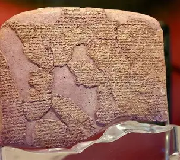

The battle of Kadesh is a significant milestone in history. It had many records that are yet to be beat, here are two reasons

The battle of Kadesh is a significant milestone in history. It had many records that are yet to be beat, here are two reasons
Before the battle of Kadesh, no peace treaties had been signed and recorded, the treaty of Kadesh is known as the first ever signed treaty (Mark J, 18 January 2012, https://www.worldhistory.org/article/78/the-battle-of-kadesh--the-first-peace-treaty) 
The battle of Kadesh was fought on chariots, both Hitties and Egyptians (check out group section to learn about these groups) fought primarily on chariots (Kerrigan M, n.d, https://www.britannica.com/event/Battle-of-Kadesh)